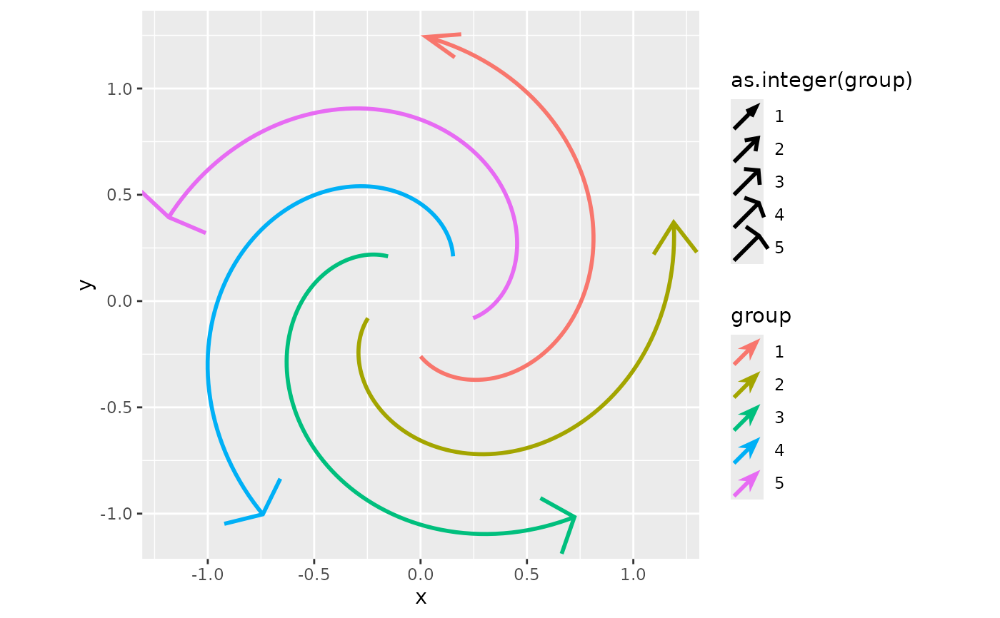
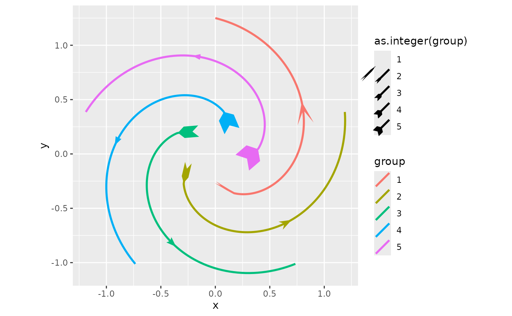

These scales can map continuous input to an argument of an arrow generator. The arrow head, arrow fins and middle arrows have separate scales and by default use different generators.
Usage
scale_arrow_head_continuous(
name = waiver(),
breaks = waiver(),
labels = waiver(),
limits = NULL,
generator = arrow_head_wings,
map_arg = "offset",
other_args = list(),
range = c(10, 80),
transform = "identity",
guide = "legend"
)
scale_arrow_fins_continuous(
name = waiver(),
breaks = waiver(),
labels = waiver(),
limits = NULL,
generator = arrow_fins_feather,
map_arg = "indent",
other_args = list(),
range = c(0, 1),
transform = "identity",
guide = "legend"
)
scale_arrow_mid_continuous(
name = waiver(),
breaks = waiver(),
labels = waiver(),
limits = NULL,
generator = arrow_head_wings,
map_arg = "offset",
other_args = list(),
range = c(10, 80),
transform = "identity",
guide = "legend"
)Arguments
- name
The name of the scale. Used as the axis or legend title. If
waiver(), the default, the name of the scale is taken from the first mapping used for that aesthetic. IfNULL, the legend title will be omitted.- breaks
One of:
NULLfor no breakswaiver()for the default breaks computed by the transformation objectA numeric vector of positions
A function that takes the limits as input and returns breaks as output (e.g., a function returned by
scales::extended_breaks()). Note that for position scales, limits are provided after scale expansion. Also accepts rlang lambda function notation.
- labels
One of the options below. Please note that when
labelsis a vector, it is highly recommended to also set thebreaksargument as a vector to protect against unintended mismatches.NULLfor no labelswaiver()for the default labels computed by the transformation objectA character vector giving labels (must be same length as
breaks)An expression vector (must be the same length as breaks). See ?plotmath for details.
A function that takes the breaks as input and returns labels as output. Also accepts rlang lambda function notation.
- limits
One of:
NULLto use the default scale rangeA numeric vector of length two providing limits of the scale. Use
NAto refer to the existing minimum or maximumA function that accepts the existing (automatic) limits and returns new limits. Also accepts rlang lambda function notation. Note that setting limits on positional scales will remove data outside of the limits. If the purpose is to zoom, use the limit argument in the coordinate system (see
coord_cartesian()).
- generator
A
<function>that can create an arrow ornament, such as ornamentation functions.- map_arg
An argument of the
generatorfunction to map input to.- other_args
Additional, fixed, arguments to pass to the
generator.- range
The range that
generator'smap_argmay take- transform
For continuous scales, the name of a transformation object or the object itself. Built-in transformations include "asn", "atanh", "boxcox", "date", "exp", "hms", "identity", "log", "log10", "log1p", "log2", "logit", "modulus", "probability", "probit", "pseudo_log", "reciprocal", "reverse", "sqrt" and "time".
A transformation object bundles together a transform, its inverse, and methods for generating breaks and labels. Transformation objects are defined in the scales package, and are called
transform_<name>. If transformations require arguments, you can call them from the scales package, e.g.scales::transform_boxcox(p = 2). You can create your own transformation withscales::new_transform().- guide
A function used to create a guide or its name. See
guides()for more information.
Examples
base <- ggplot(whirlpool(5), aes(x, y, colour = group)) +
coord_fixed()
p <- base +
geom_arrow(
aes(arrow_head = as.integer(group)),
length_head = 10
)
# A typical scale
p + scale_arrow_head_continuous()
# Change other arguments passed to the generator
p + scale_arrow_head_continuous(other_args = list(inset = 90))
# Using another argument of the generator
p + scale_arrow_head_continuous(name = "inset", map_arg = "inset")
# Using a different generator
p + scale_arrow_head_continuous(
generator = arrow_head_line,
map_arg = "angle",
range = c(20, 80)
)

# The same goes for other arrow aesthetics, but the `generator()` might
# differ.
base +
geom_arrow(
aes(arrow_fins = as.integer(group), arrow_mid = as.integer(group)),
length_fins = 10, arrow_head = NULL
) +
scale_arrow_fins_continuous(map_arg = "height", range = c(0.1, 1)) +
scale_arrow_mid_continuous(map_arg = "inset")
